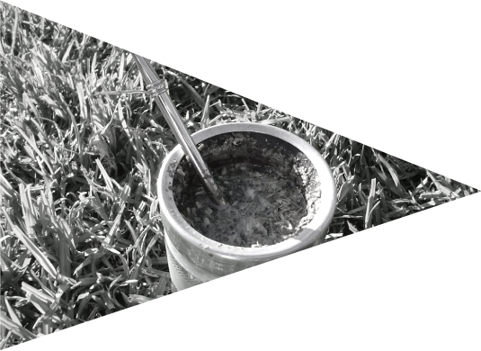

about mate
-
People have been drinking yerba mate (pronounced mah-tay) for centuries. The tea originates from indigenous Paraguay where it was drunk for its medicinal purposes around a fire, passed in a gourd from person to person. It is brewed and repeatedly topped up with hot water, giving it a warm smokey flavour.
-
When the Spanish arrived in South America, they went mad for the brew, some even going into debt just to get their next fix. This wild-grown tea made for wild men and the wider world was about to be jolted by this energising, delicious concoction.
 -
In the modern era, German hacktivists went mental for mate, harnessing its energy for their all-night coding sprints and marathons. Berlin and Hamburg become chock-full of mate drinking techies.
-
Eventually the German club scene caught on to the buzz and all-night party goers began mixing it with essential spirits to create vodka mates, the German club drink of choice.
-
People increasingly caught on to the energising effects of mate, which gives a healthier and longer lasting fix than caffeine from coffee, all while enhancing relaxation without the jittery feels.

-
When ChariTea's mate came onto the scene they became the first certified organic Fairtrade mate iced tea and the only mate brewed from loose leaf originally like the Argentinians. ChariTea’s mate also gives back to the farmers and communities in South America that have been producing this tea for centuries.
-
Back in the day, mate was drunk from a gourd and passed around a fire. Today, South Americans drink from a bombilla, and continue to sip and pass.
In London, we drink from glass bottles, but we have kept the culture of sip and pass. We take a sip and pass our bottle back to the bartender to be topped up with vodka or gin. This is our own take on the mate ritual, or as we like to call it, the #matingritual.
the #matingritual
-
1. Take a sip
As you take the ice cold bottle in your hands, the hair on your neck stands on end. Pressing the bottle to your lips, a shiver tickles its way down your spine as you fill your mouth with the cool sweet liquid.
-
2. Pass it back
The mate refreshes you, your eyes go wide with pleasure as your gaze returns hazily to the bartender. You can feel your touch missing something as the bottle leaves your hand for theirs.
-
3. Top up with vodka or gin
Your hands clasp the edge of the bar. You bite your lip as you watch the bartender grip your mate, bringing close a spirit of your choice. With a flick of the wrist, he splashes in a shot as a drip glides effortlessly down the side.
-
4. Enjoy mate
You quiver as the bartender passes your mate back to you across the bar. Your hand closes around the bottle as your tilt your head back, bringing the completed drink to your lips. You take a long satisfying sip. Where do you mate?
{kind=link}
{kind=link}
how do you mate?
We've asked London to tell us how they like to mate. In the club? In the park? On the bus? With a friend, or two? Join the conversation on Instagram and Twitter and tell us how you mate in London. To request stickers for your venue or friends, just click here to send us an email.
So London, tell us. What's your #matingritual?